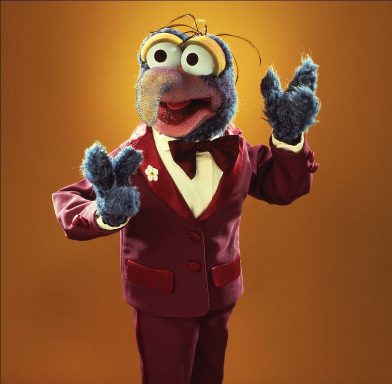

FUN = GONZO
I always loved the weird characters in any story when I was a kid. Gonzo was the wackiest, but he also had this small sadness that he carried around with him. His stunts and schemes never quite worked out, and he never felt like he attained his true purpose of completing that "one historic stunt." This made him a real person to me.
A wild and crazy guy!